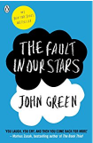

Back
Buyit
Contact Us
Back
Buyit
Contact Us
Books
The Fault in our Stars Paperback- 3 Jan 2013
by John Green

PRODUCT DESCRIPTION
Review
Electric . . . Filled with staccato bursts of humor and tragedy (Jodi Picoult)
A novel of life and death and the people caught in between, The Fault in Our Stars is John Green at his best. You laugh, you cry, and then you come back for more (Markus Zusak, author of The Book Thief)
Damn near genius . . . Simply devastating . . . Fearless in the face of powerful, uncomplicated, unironized emotion (TIME)
Funny . . . Poignant . . . Luminous (Entertainment Weekly)
ABOUT THE AUTHOR
About the Author: The prestigious award winning author, John Green has won many accolades including the Edgar Award, The Printz Medal and a Printz Honor. John Green currently lives in Indianapolis with his son and wife. With the help of his brother Hank, John runs half of the Vlogbrothers, which is one of the most renowned YouTube video channels.
PRODUCT DETAILS
Reading level: 14 - 16 years
Paperback: 316 pages
Publisher: Penguin; Black Edition edition (3 January 2013)
Language: English
ISBN-10: 0141345659
ISBN-13: 978-0141345659
Product Dimensions: 12.9 x 2 x 19.8 cm